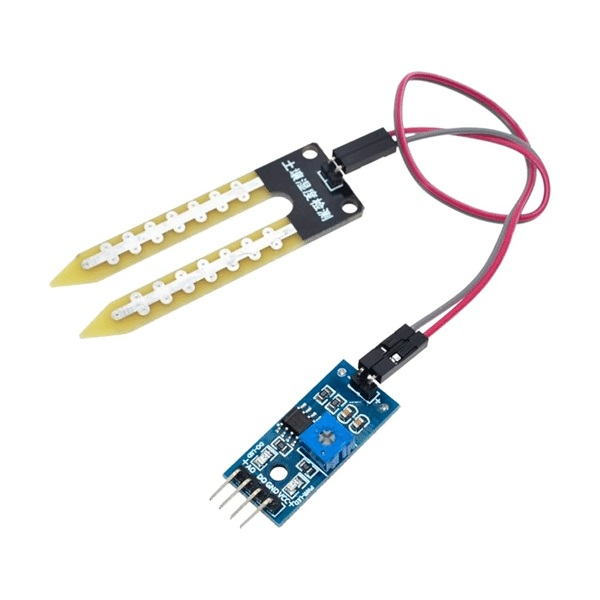
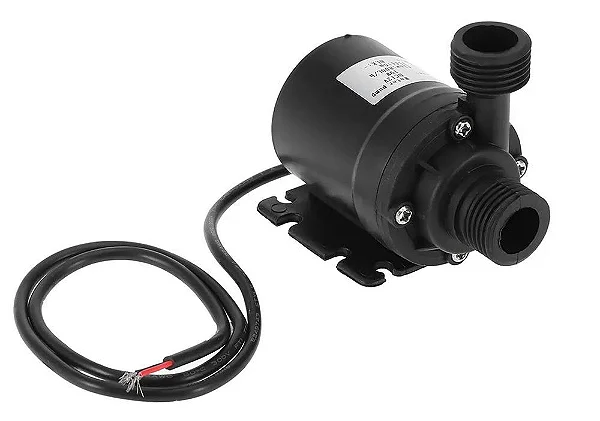
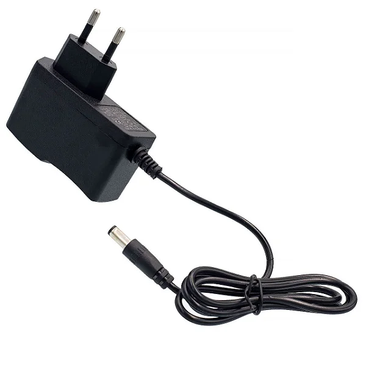

🌱 Projeto de Irrigação Automática
Nosso projeto tem como objetivo automatizar o processo de irrigação utilizando sensores de umidade do solo e microcontroladores. Isso garante que as plantas recebam água na medida certa, economizando recursos e tempo.
🔧 Como funciona
O sistema detecta a umidade do solo através de sensores. Quando a umidade está baixa, a bomba d'água é acionada automaticamente para irrigar a planta. O projeto pode ser alimentado por uma fonte USB ou bateria.
📦 Peças utilizadas
| Componente | Descrição | Imagem | Valor (R$) |
|---|---|---|---|
| Arduino UNO | Microcontrolador principal do sistema |  |
60,00 |
| Sensor de Umidade | Detecta o nível de umidade do solo |  | 10,00 |
| Mini Bomba d'água | Responsável por bombear a água |  | 25,00 |
| Fonte 5V | Alimentação do sistema |  | 15,00 |
💰 Valor total do projeto: R$ 110,00
📁 Acesso ao projeto no Roblox
Você pode acessar a experiência relacionada ao nosso projeto no Roblox clicando no link abaixo: